Myrotvorets, the Ukrainian website that publishes a public “enemies” database, is a digital target list. It names American citizens, and its own source code labels a visitor-targeting feature “psyops.” It also shares mail servers with InformNapalm, a Ukrainian volunteer intelligence group whose work U.S. taxpayer money helped fund. That money was a $100,000 grant from the National Endowment for Democracy (NED) in 2016. It went to the Ukrainian nonprofit Prometheus for investigations published on InformNapalm, not to Myrotvorets directly.
OctoProbe pulled the public record. We read State Department documents released under the Freedom of Information Act (FOIA), the federal law that lets the public request agency records. We checked live and historical Domain Name System (DNS) records, the internet’s address book. We read certificate logs, archived web pages, an NED grant list, and Myrotvorets’ own code.
The findings are narrower than the internet rumors. They are also harder to dismiss.

psyops script over a map of Kyiv. Map © OpenStreetMap contributors.What Is Myrotvorets? The Ukrainian “Enemies” Database Explained
Myrotvorets means “peacemaker.” It launched in 2014 under the domain psb4ukr.org and now runs at myrotvorets.center. Its main product is a searchable database it calls “Purgatory.” Each entry carries a name, photos, an accusation, and links. Many carry far more.
The site describes itself in English in its own header. The archived homepage from September 2, 2026 reads: “Information for law enforcement authorities and special services about pro-Russian terrorists, separatists, mercenaries, war criminals, and murderers”
Directly below that line, the same header lists three locations. One of them is “Langley, VA, USA.” Langley is the Virginia community that houses CIA headquarters. We return to that line below.

Myrotvorets says it is independent and unfunded by any government. Its donation page, archived November 1, 2021, states in Ukrainian: “Центр не фінансується жодною державною чи недержавною організацією, не належить до будь-якої урядової структури.” In English: the center is not financed by any state or nonstate organization and does not belong to any government structure. That translation is OctoProbe’s.
Critics call the database a “kill list.” Fact-checkers have pushed back on that label. Newsweek wrote in 2022: “Mirotvorets does not advocate violence against those on its database, and there is no conclusive evidence that it's ever been used as a "kill list," as Waters claims.”
Human rights monitors take the doxing seriously. Doxing means publishing private personal details, such as a home address, to expose someone. The Atlantic Council’s Digital Forensic Research Lab (DFRLab) reported in 2017 that the United Nations human rights office had urged Kyiv to act. DFRLab wrote that “Ukrainian authorities were urged to promptly and effectively conduct an investigation to address alleged violations and remove personal data from Myrotvorets.”
DFRLab also reported that Ukraine’s own president objected. It wrote: “In June 2016, Ukrainian President Petro Poroshenko condemned Myrotvorets for publishing personal data of more than 4,000 journalists”
The U.S. government has weighed in, too. The State Department’s 2023 human rights report on Ukraine says: “The Myrotvorets website, which reportedly maintained close ties to the security services, hosted a database of personal information of journalists and public figures whose statements and activities had been deemed unpatriotic.”
Note the word “reportedly.” Washington has never formally tied Myrotvorets to a Ukrainian agency. Neither has Kyiv.
Who Runs It
The site’s operators stay anonymous. Press reports have long named two men. One is a director using the name Roman Zaitsev. The other is Anton Gerashchenko, a former member of parliament and adviser to Ukraine’s interior minister.
DFRLab, citing Radio Free Europe/Radio Liberty (RFE/RL), wrote that Zaitsev was a former department head at the Security Service of Ukraine (SBU), the country’s domestic intelligence agency. Asked whether Myrotvorets was his project, DFRLab reported, “Gerashchenko winked, chuckled, and replied: ‘No.’”
The Russian-language independent outlet Meduza summarized the record in 2024. It wrote that, according to The Times of London, “The Myrotvorets database was created in 2014 by Ukrainian politician Heorhiy Tuka and a former State Security Service (SBU) officer using the pseudonym Roman Zaitsev”
The same Meduza piece states plainly: “Myrotvorets is not officially affiliated with the Ukrainian government.” It adds that Zaitsev “has maintained that the website is not controlled by the agency and does not receive state funding.”
That is the official story. The rest of this report tests it against the plumbing.
How OctoProbe Investigated Myrotvorets
This report uses open-source intelligence, or OSINT: research built only from information anyone can reach. Readers can check each step.
Archived pages. Myrotvorets and InformNapalm sit behind Cloudflare challenges that block automated readers. OctoProbe did not try to defeat those checks. Instead, we used the Internet Archive’s Wayback Machine, which stores dated copies of public pages. Where we quote code, we used the archive’s raw mode, which serves the page exactly as it was captured, without the archive’s own toolbar. Each code block names its capture.
DNS records. We looked up mail, address, and text records through Cloudflare’s public DNS-over-HTTPS service, a way to query DNS from a web address. Each record link in this report reruns the same lookup live through Google Public DNS, so readers can check it in a browser. Results can change after publication. Our snapshot is dated October 16, 2026, at 8:58 p.m. EDT.
Network ownership. We checked who holds each server address through the Registration Data Access Protocol (RDAP), the modern public lookup run by the regional internet registries such as ARIN.
Certificates. We searched certificate transparency logs through crt.sh. Every certificate that browsers trust must be logged publicly, which makes these logs a reliable history of when a domain went live with security.
Code hosting. We read public GitHub profiles and the GitHub API, which returns creation dates and repository counts in a machine-readable form.
Documents. We read the FOIA excerpts and slides in a research dossier that sources provided. Where the dossier makes claims we could not check, we say so. We excluded material that rested on unverified personal allegations, and we did not publish personal identifiers the dossier contains.
Privacy. Myrotvorets publishes personal data. OctoProbe does not repeat it. We blurred faces in database entries, replaced dates of birth with a mask, and cropped addresses, phone numbers, email addresses, and payment details from every image.
What we did not do. We did not log in to any account, submit forms, send test traffic to the psyops endpoint, or contact servers beyond normal public lookups. That limits what we can say about server-side behavior. It also means every finding here can be reproduced by any reader with a browser.
The FOIA Documents: What U.S. Diplomats Saw in Kyiv
Sources provided OctoProbe with a research dossier on Myrotvorets. It includes excerpts from two State Department FOIA releases. Neither document mentions Myrotvorets by name. Both describe the security environment it grew up in. Both deserve careful reading, because both are easy to overstate.
Document One: “Massive Wiretapping” of Journalists
The first is an email chain from October 28, 2016. The dossier labels it FOIA release FL-2017-16407. A State Department employee in Kyiv sent it to the embassy’s political section under the subject line “Ukrainska Pravda reveals massive wiretapping, surveillance of journo’s communications by pres admin.”
The note summarizes an investigation by Ukrainska Pravda, Ukraine’s leading online newspaper. It reads, in the cable’s own words: “UP published investigation report based on the ‘analytical reports’ prepared by presidential administration for Poroshenko and his entourage that were anonymously leaked to Olena Prytula (UP owner) several months ago.”
The cable records the official denial in the next line: “Media reached SBU’s Deputy chief Tkachuk for comment. Tkachuk dismissed UPs claims as ‘groundless.’”
The email was forwarded to the U.S. ambassador, an FBI official, and others. A routing block on the same page lists Victoria Nuland, then the assistant secretary of state for European affairs, as a sender to a group of officials. Privacy redactions marked “(b)(6)” cover several addresses.

You can read the newspaper’s original story. Ukrainska Pravda published it on October 28, 2016, under the headline “Вуха влади. Як стежать за роботою журналістів УП (ДОКУМЕНТИ).” That translates to “The Ears of Power: How the Work of UP Journalists Is Being Watched (Documents).”
Ukraine’s government disputed it. Ukrainian News Agency later reported that the SBU and the National Police said they found no evidence of spying on the outlet’s journalists.
Why it matters here: the email shows U.S. diplomats tracking claims that Ukraine’s security service watched critical journalists. During the same window, Myrotvorets posted the personal data of thousands of journalists. The cable does not link the two. OctoProbe does not either. It sets the scene.
Document Two: The “Bedbugs” File
The second excerpt is page thirteen of twenty-one from State Department case FL-2020-00028, released August 31, 2021. The header marks it “UNCLASSIFIED.” It is an April 27, 2018, email with the subject “Counter-espionage case against Sytnyk and Uglava.” Sender and recipient are redacted.
Artem Sytnyk then ran Ukraine’s National Anti-Corruption Bureau (NABU), which the United States backed. Gizo Uglava was his first deputy.
The email summarizes a document said to come from the SBU. It reads: “Attached is a copies of the Act (top secret) about opening the counter-espionage case against Sytnyk and Uglava initiated by State Security Service of Ukraine. The case code name is ‘Bedbugs’.”

The bullet points that follow are the SBU file’s accusations, not U.S. findings. One reads: “To lobby this process U.S. Intelligence Agencies influenced public activists Shabunin, Yurchishyn, Kaleniuk, Sobolev, Leshchenko and Naiem through providing grants for them;”
Another reads: “Uglava and Sytnyk every week attending U.S. Embassy for coordination their tasks and getting new instructions;”
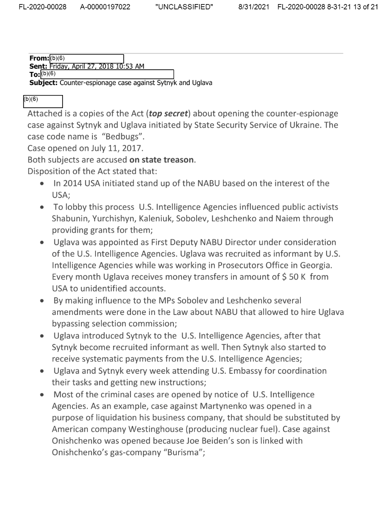
Read that page carefully. It does not show the CIA paying anyone. It shows a U.S. official forwarding what a Ukrainian counterintelligence file alleged. That file’s authenticity is contested.
The Ukrainian site Skelet.org, translating a Vesti report, wrote in 2018: “The SBU says it's a fake.” The same article quotes the document’s text as “the document, whose authenticity has not been proven, states.”
So the strongest fair reading is this: in 2018, the State Department had in hand a document in which Ukraine’s own security service, or someone posing as it, accused U.S. intelligence of steering activists with grants. The SBU publicly disowned it. Whether anyone acted on it is unknown.
What the FOIA Record Does Not Show
Neither document names Myrotvorets, InformNapalm, or NED. Neither proves a U.S. hand in either site. The dossier itself flags that gap. It notes that a separate leaked slide deck, discussed below, cannot be verified without FOIA releases or formal statements from the Pentagon.
That is the honest state of the paper trail. The technical trail goes further.
2014: Ukraine’s Information War and the NATO Halo
Myrotvorets was born in a war of words as much as a war of guns. To read its code and its branding, you need that context.
In February 2014, the Maidan protests in Kyiv toppled President Viktor Yanukovych. Within weeks, Russia seized Crimea. By spring, Russian-backed forces were fighting in the Donbas, Ukraine’s eastern coal region. Kyiv found itself outgunned on television and online as well as on the ground.
DFRLab described the response in 2017: “After the illegal annexation and occupation of Crimea and the beginning of the conflict in eastern Ukraine in 2014, the new Ukrainian government began to undertake efforts aimed at combating Russian active measures, information warfare, and propaganda.”
A Ministry for Information and an Online Army
In December 2014, the same month Myrotvorets’ first domain was live and indexed, Ukraine created a Ministry of Information Policy. Within weeks it launched a volunteer “information army.”
Newsweek reported in February 2015: “35,000 individuals have reportedly signed up to join Ukraine's 'information army' - the new project drafted by the country's Ministry of Information Policy”
The minister promised honesty. “"We are not going to create fake news, we are not going to talk nonsense and we will not speak untrue things," he said.” The project’s motto was blunter. Newsweek reported it as “"Every post you make is a bullet to the mind of the enemy".”
That is the climate in which a volunteer “enemies” database could flourish, with officials applauding from the sidelines.
Leaving Neutrality Behind
Ukraine was also changing its geopolitical identity. NATO’s own history page says: “From 2010 to 2014, Ukraine pursued a non-alignment policy, which it terminated in response to Russia’s aggression.”
NATO says its Kyiv office advises Ukraine on messaging. The page lists among that office’s tasks “providing advice and support to Ukrainian institutions in the area of strategic communications capability development.”
None of that is secret. It is the public face of a real partnership. The question for this investigation is different. Did people behind Myrotvorets dress the project up as more Western, and more NATO-backed, than it was?
OctoProbe Analysis: Borrowed Credibility
The public evidence shows a pattern of Western and NATO branding attached to Myrotvorets infrastructure. Taken alone, each item proves little. Together, they suggest a deliberate effort to borrow credibility, or to rattle adversaries. This is OctoProbe’s reading, not an established fact.
The Langley address. The homepage header, quoted above, lists “Langley, VA, USA” first among its locations. That line is real; it sits in the site’s HTML today. What it does not do is prove a CIA link. A website can print any address it likes.

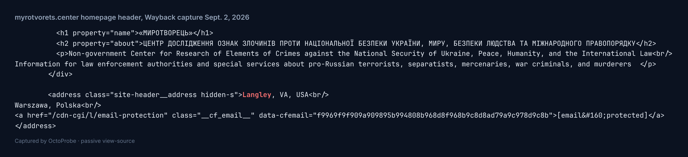
<h1 property="name">«МИРОТВОРЕЦЬ»</h1>
<h2 property="about">ЦЕНТР ДОСЛІДЖЕННЯ ОЗНАК ЗЛОЧИНІВ ПРОТИ НАЦІОНАЛЬНОЇ БЕЗПЕКИ УКРАЇНИ, МИРУ, БЕЗПЕКИ ЛЮДСТВА ТА МІЖНАРОДНОГО ПРАВОПОРЯДКУ</h2>
<p>Non-government Center for Research of Elements of Crimes against the National Security of Ukraine, Peace, Humanity, and the International Law<br/>
Information for law enforcement authorities and special services about pro-Russian terrorists, separatists, mercenaries, war criminals, and murderers </p>
</div>
<address class="site-header__address hidden-s">Langley, VA, USA<br/>
Warszawa, Polska<br/>
<a href="/cdn-cgi/l/email-protection" class="__cf_email__" data-cfemail="f9969f9f909a909895b994808b968d8f968b9c8d8ad79a9c978d9c8b">[email protected]</a>
</address>Source: myrotvorets.center/, fetched October 16, 2026.
Some outlets ran with it. CovertAction Magazine wrote in 2022 that Myrotvorets is a website “whose domain name is listed as being in Langley, Virginia, headquarters of the CIA.” It also claimed: “Its welcome message advertises itself as a “CIA project.””
OctoProbe could not confirm the “CIA project” claim. The archived homepage we reviewed contains no such phrase. The domain’s name servers belong to Cloudflare, a U.S. network company that fronts millions of websites. Cloudflare’s presence says nothing about who owns the site.
The “NATO” content network. Myrotvorets has served files from a domain called natocdn.net. A content delivery network (CDN) is a set of servers that stores copies of images and scripts close to readers so pages load fast. The name “natocdn” invites readers to assume NATO runs it.
Certificate transparency logs tell a plainer story. Those logs are public records of every security certificate issued for a web address. The crt.sh search for natocdn.net shows the earliest certificates were issued on January 26, 2019, by Cloudflare and Let’s Encrypt, a free certificate service. NATO’s own sites use the nato.int domain.

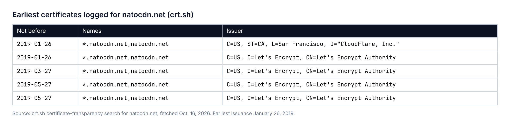
The dossier provided to OctoProbe says historical registration records tie natocdn.net to the same person it says first registered myrotvorets.center. OctoProbe could not independently pull those paid historical records. We report the claim as the dossier’s, not ours.
The dossier also addresses a rumor that a Myrotvorets server once resolved to a NATO subdomain, psb4ukr.nato.int. It says no historical DNS provider it checked shows that subdomain ever existed. It traces the claim to a forum screenshot and to the defunct pro-Russian hacker site Cyber Berkut. OctoProbe agrees the claim is unproven.
A reader comment on the CovertAction article made the same leap in reverse. It declared, in capital letters, that natocdn.net content was hosted on servers assigned to NATO in Brussels. OctoProbe’s DNS lookup on October 16, 2026, found natocdn.net behind ordinary Cloudflare addresses. Nothing in public data supports the Brussels claim.
“For foreign special services.” The homepage menu includes an English link reading “For foreign special services.” It points to auth.myrotvorets.center, a login page. More on that page in the code section.
The leaked slide deck. The dossier includes two slides from what it calls a leaked psychological-operations presentation. Psychological operations, or psyops, are military efforts to shape the beliefs and behavior of a target audience.
One slide, titled “Tasks of Operation,” lists goals such as “Organization of the spread of misinformation, destructive rumors, panic and pessimistic moods in the territories under separatists control.” A second slide, “Cooperation,” lists NATO’s strategic communications and cyber defense centers, U.S. Special Operations Command, U.S. Cyber Command, the Army’s 4th Military Information Support Operations Group, and two British units.


The dossier says the deck describes InformNapalm as a Ukrainian Ministry of Defense “special project.” OctoProbe has not seen the full deck, cannot date it, and cannot identify its author. Anyone can type a list of NATO units onto a slide. We publish the slides because they circulate widely, and because readers deserve to see what is actually on them. We do not treat them as evidence of U.S. or NATO involvement.
Here is the bottom line on branding. Myrotvorets and its satellites use names and labels that point at Langley and NATO. The public record shows commercial certificates, Cloudflare hosting, and a Ukrainian volunteer operation. Branding is not backing.
Shared Infrastructure: How Myrotvorets and InformNapalm Connect
InformNapalm calls itself an international volunteer intelligence community. Since 2014 it has published open-source investigations, research built from public photos, social posts, and records, into Russian forces in Ukraine. It has also published material from hacks of Russian officials.
Press reports and the dossier have long hinted that InformNapalm and Myrotvorets share people. OctoProbe set a stricter test: what can anyone prove from public internet records?
Who InformNapalm Is
InformNapalm’s crypto donation page, hosted by the payment service Whitepay, puts it in its own words: “Founded in 2014, InformNapalm is an international volunteer intelligence community. We investigate military activities, cyber threats and information operations using OSINT, HUMINT and CYBINT, publishing research in more than 20 languages.”
Those are intelligence-trade terms. OSINT is open-source intelligence. HUMINT is human intelligence, gathered from people and sources. CYBINT is cyber intelligence, drawn from computer networks. A group that lists human sources and cyber collection alongside public research is describing more than a fact-checking blog. The same page accepts cryptocurrency donations through Whitepay.

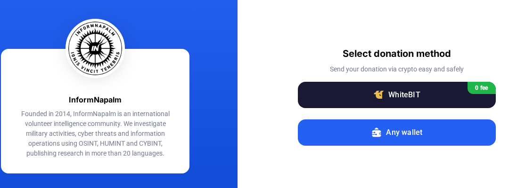
InformNapalm says it began in March 2014 as a volunteer response to Russia’s seizure of Crimea. Its researchers comb social media for soldiers’ selfies, unit patches, and vehicle markings. They have identified Russian units fighting in Ukraine years before Moscow admitted their presence.
It has also published hacked material. The dossier notes the group’s 2016 release of emails it said came from the office of Vladislav Surkov, a senior Kremlin adviser on Ukraine. Hacktivists, not InformNapalm, claimed the breach itself.
Its partner in the 2016 NED grant, Prometheus, is a Kyiv nongovernmental organization. The Ukraine Crisis Media Center has listed Mykola Balaban as Prometheus’ president. Together the two groups produced research guides on Russian-backed forces. That kind of work is exactly what NED’s grant text describes.
None of that makes InformNapalm a branch of Myrotvorets. The two projects publish different kinds of material. InformNapalm writes about units and weapons. Myrotvorets names individuals. The overlap OctoProbe found is in the infrastructure underneath.
Proven: The Same Mail Server
Every domain has a mail exchanger (MX) record. It tells the world which server accepts that domain’s email. OctoProbe queried the records on October 16, 2026, at 8:58 p.m. EDT, through Cloudflare’s public DNS service.
The MX record for myrotvorets.center points to mx.wildwolf.name. So do the records for psb4ukr.org, myrotvorets.news, and ordilo.org, all Myrotvorets properties. The Myrotvorets face-recognition service, identigraf.center, points to mail.wildwolf.name.
The MX record for informnapalm.org points to mail.wildwolf.name too.
Both wildwolf.name mail hostnames resolve to the same internet address, 158.69.208.188. The American Registry for Internet Numbers (ARIN), which tracks who holds North American address blocks, lists that block under OVH Hosting, Inc., a Canadian arm of the French cloud company OVHcloud.

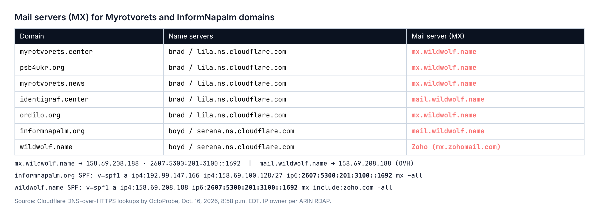
A second record seals it. Sender Policy Framework (SPF) is a short text record that lists which servers may send mail for a domain. It fights spoofed email.
The SPF record for informnapalm.org authorizes one specific IPv6 address: 2607:5300:201:3100::1692. IPv6 is the newer, longer form of internet address. The IPv6 address of mx.wildwolf.name, the server that takes Myrotvorets’ mail, is the same: 2607:5300:201:3100::1692. The SPF record for wildwolf.name lists that address as well.
Plain English: InformNapalm’s domain tells the world that one particular machine may send its mail. That same machine receives Myrotvorets’ mail.
Shared mail hosting does not prove shared editorial control. Small hosting providers serve many unrelated clients. But wildwolf.name is not a commercial mail provider with a sign-up page. It is a personal domain. That makes the overlap meaningful.
Why One Mail Server Matters
Skeptics will say a shared server is a small thing. Plenty of unrelated sites share hosting. That is true for big commercial providers. It is not true here, for three reasons.
First, the server is not a commercial product. There is no public sign-up for wildwolf.name mail. Organizations that hand their email to a private individual’s machine trust that person with every message they receive, including tips, threats, and law enforcement correspondence.
Second, the link runs in both directions and across years. InformNapalm’s SPF record has to be written by someone with control of InformNapalm’s domain settings. Myrotvorets’ MX records have to be written by someone with control of Myrotvorets’ domains. Both point to the same box. InformNapalm also shares its Cloudflare name-server pair, boyd and serena, with wildwolf.name itself. Cloudflare generally assigns name-server pairs by account, so a shared pair is consistent with shared management, though not proof of it.
Third, the server sees traffic. Mail handling gives its operator access to message routing. The c3 beacon gives the same domain a live feed of which Myrotvorets pages readers open. Whoever runs wildwolf.name sits at a chokepoint for both projects.
OctoProbe does not know who decides what Myrotvorets publishes. The plumbing shows who keeps the pipes running.
Who Is Behind wildwolf.name
The public GitHub profile github.com/sjinks lists its website as https://wildwolf.name/. The profile name reads “Volodymyr Kolesnykov.” It lists the location as Ukraine and the company as Automattic, the firm behind WordPress.com.

InformNapalm has publicly named a webmaster with nearly the same name. In an August 2018 fundraising post for a sick volunteer, it wrote that “Volodymyr Kolesnikov – our webmaster and the most devoted volunteer in our team – was diagnosed with cancer.”
The same post adds a telling detail about his job: “We want to hear him swearing during yet another DDoS attack on informnapalm.org.” A distributed denial-of-service (DDoS) attack floods a site with junk traffic to knock it offline.

“Kolesnikov” and “Kolesnykov” are two common English spellings of the same Ukrainian surname. OctoProbe treats the match as strong but not conclusive. We found no public statement from Kolesnykov about Myrotvorets. We are not accusing him of anything. Running mail servers for websites is lawful work.
What the record does prove is a single technical operator behind mail for both projects, and a public trail from that operator’s domain to a named Ukrainian developer.
The map below shows how those ties fit together. OctoProbe built it from public records on eight subjects, including Myrotvorets, InformNapalm, Prometheus and Ukrainian officials. Private emails and phone numbers of individuals are blurred.

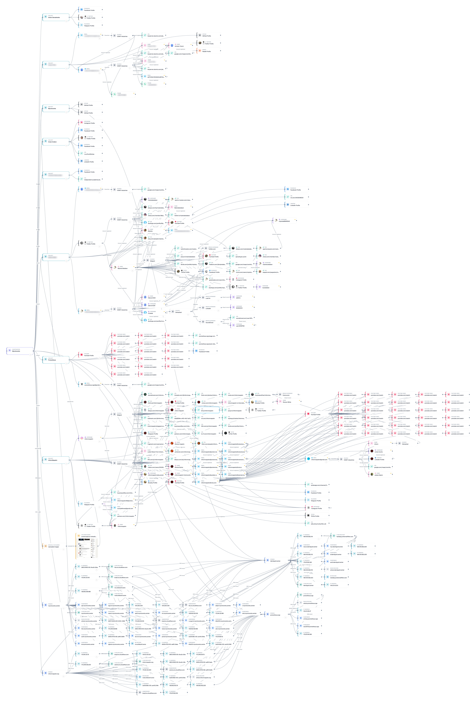

Proven: Every Page Calls wildwolf.name
The tie is not only in mail. The last script on the archived Myrotvorets homepage sends each visit to a server on the same personal domain. Details are in the code section below. In short, every page view tells c3.wildwolf.name which Myrotvorets page the reader opened.
The archived /criminal/ database page from October 11, 2026, carries the same call.
Proven: Myrotvorets’ Software Factory
Myrotvorets runs a public GitHub organization. The GitHub API shows the account “myrotvorets” was created on May 23, 2020, links to https://myrotvorets.center/, and holds seventy-one public repositories. Its listed contact email misspells the site’s own name.

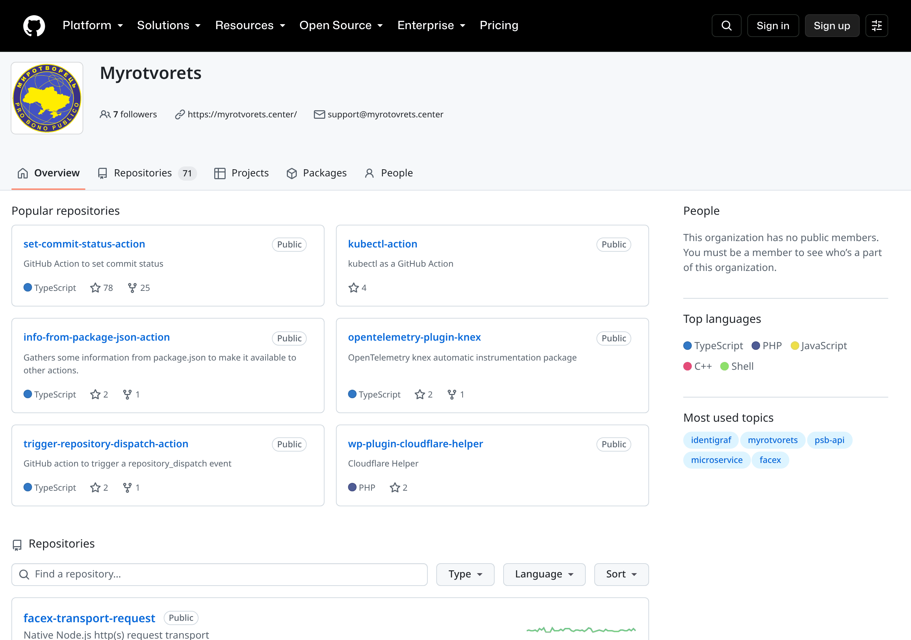
The repositories are not toys. They include microservices for IDentigraF, the group’s face-recognition tool, a “FaceX” image-processing stack, a Telegram bot for Myrotvorets News, and psb-api-ipgeo, described as an “IP Geolocation microservice.” IP geolocation estimates a visitor’s country and city from their internet address.

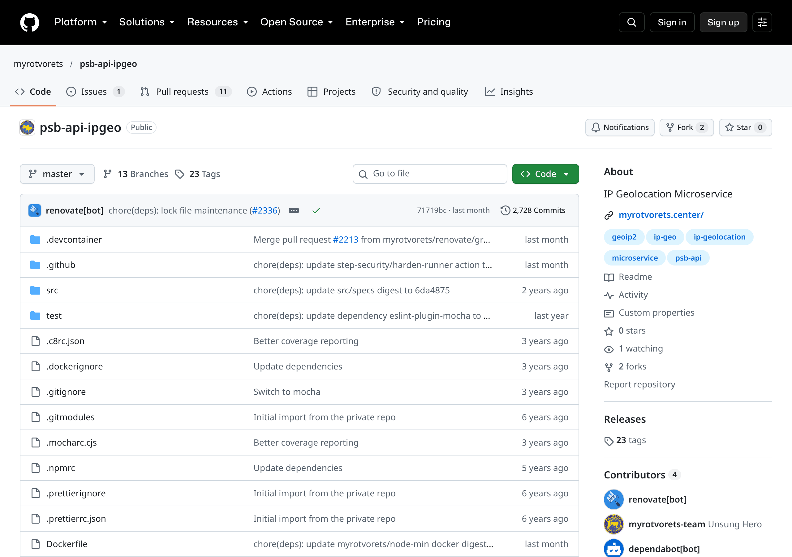
Commits come from an account called “myrotvorets-team” and from automated update bots. The organization shows no public members. The developers stay hidden.
Reported, Not Verified: The Registrant Trail
The dossier makes a further claim that OctoProbe could not check against a free public source. It says historical WHOIS records show myrotvorets.center was first registered on November 7, 2015, with an email address at informnapalm.org. WHOIS is the public registry of who holds a domain name. Older WHOIS history sits behind paid services such as SecurityTrails.
The dossier also includes a 2016 WHOIS record for psb4ukr.net that names the same registrant. OctoProbe is not publishing that record, because it contains a street address and phone number. The dossier itself cautions that WHOIS entries can be filled in with any affiliation and are often falsified.
If the registrant email is accurate, it would be a second, direct link between the projects. OctoProbe rates it as reported, not proven.
The Founders’ Own Words
Myrotvorets’ leadership has never hidden its kinship with InformNapalm, or with the state. In a 2015 interview with the Ukrainian outlet Fakty, quoted by Lawfare, Zaitsev said: “I repeat, we are not abstract: we work with the state, and the state cooperates with us.” The section on officials below shows what that cooperation looked like on paper.
The two projects also sit on the same sidebar. Myrotvorets’ “Our projects” widget, captured in the dossier, links its database, IDentigraF, Myrotvorets News, a radio stream, and the leak archive Ordilo.

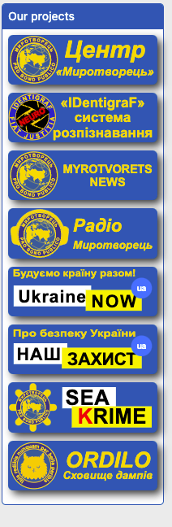
The dossier also includes a subdomain list exported from SecurityTrails. Subdomains are prefixes such as report.myrotvorets.center that point to separate services. Most sit behind Cloudflare. A few, including tgbots and pond, resolve directly to OVH, the same hosting company behind the shared mail server. OctoProbe’s own lookup confirmed pond.myrotvorets.center at an OVH address.

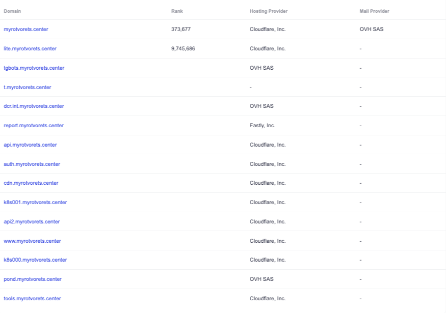
The Money: NED, Prometheus, and InformNapalm’s “No Grants” Claim
Allegations of American money have trailed Myrotvorets and InformNapalm for a decade. Most of them cite nothing. One payment is on the public record.
Proven: A $100,000 NED Grant for informnapalm.org Work
The National Endowment for Democracy is a private nonprofit in Washington, D.C. It hands out grants to civic groups, independent media, and activists abroad. Its money comes mostly from Congress.
NED publishes each year’s grants by country. The archived 2016 Ukraine grant list includes this entry, quoted in full:
“Promoting the Integrity of the Information Space” — Prometheus — $100,000. “To defend the integrity of the information space. The organization will conduct open-source investigations that monitor and spotlight external Russian military actions and post them on its popular and trusted website, https://informnapalm.org.”

The grantee is Prometheus, a Ukrainian nongovernmental group. The described deliverable is investigations posted on InformNapalm’s website. The grant text calls informnapalm.org “its” website.
The two groups also published together. The Ukraine Crisis Media Center, a Kyiv press hub, announced a joint Prometheus and InformNapalm report titled “Donbas in Flames,” a guide to Russian-backed armed groups in eastern Ukraine.
InformNapalm’s Own Account
InformNapalm presents itself differently. Its English donation page says: “It may seem unfathomable that we have not yet become some kind of a public organization, have not applied for grants and have not become vassals of a political party or an individual businessman.”
The page adds: “There is no government institution in any country in the world that would fund our activities.” And: “We are a purely volunteer project and we will remain so.”

Can both be true? Narrowly, yes. InformNapalm itself may never have signed a grant contract. A partner organization did, for work that would appear on InformNapalm’s site. A reader told that InformNapalm “have not applied for grants” would not learn that U.S. public money once paid for its content. OctoProbe considers that gap worth disclosing. It is not proof of wrongdoing.
OctoProbe found no NED grant to Myrotvorets. The NED active-grant listing and the archived 2016 Ukraine list do not name it. No public record we found shows NED money reaching the Myrotvorets database.
Is NED a CIA Front? What the Record Says
Online, the NED grant is often cited as “CIA money.” That claim needs care.
NED says it is not part of the government. Its FAQ page answers the question “Is NED part of the U.S. government?” with: “No. NED is a private, non-profit, grant-making organization that receives an annual appropriation from the U.S. Congress through the Department of State.”
It also says it does not fund domestic work: “No, although NED does provide funding to some U.S.-based organizations who carry out programs abroad, it does not provide funding for programs in the United States.”
NED explains why independence matters to it: “NED’s independence from the U.S. Government also allows it to work with many groups abroad who would hesitate to take funds from the U.S. Government.”

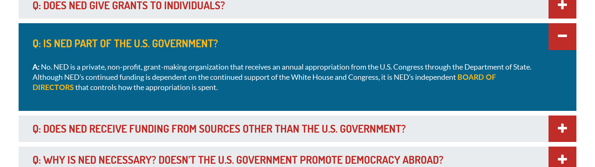
The CIA comparison comes from NED’s own early leadership. In 1991, The Washington Post’s David Ignatius quoted Allen Weinstein, who helped draft the legislation that created NED: “A lot of what we do today was done covertly 25 years ago by the CIA,” Ignatius also wrote: “The biggest difference is that when such activities are done overtly, the flap potential is close to zero.”
That quote is about history and method. It says NED does openly some work the CIA once did in secret. It does not say the CIA funds or directs NED. It does not mention Ukraine, InformNapalm, or Myrotvorets.
OctoProbe found no document showing CIA funding of InformNapalm or Myrotvorets. The only “U.S. intelligence grants” language we found in the FOIA material is the SBU “Bedbugs” file, which concerns other activists and which the SBU called a fake.
What a Real CIA Link Would Look Like
Claims of CIA funding are easy to make and hard to prove. It helps to spell out what evidence would settle the question.
A real funding link would leave paper. It could be a contract or grant record naming Myrotvorets or InformNapalm. It could be a declassified document, a FOIA release that names either group, sworn testimony, or a court filing. It could be a payment trail through a known intermediary, documented by a reputable outlet with named sources.
OctoProbe found none of those. What exists instead is a mix of branding, such as the Langley address and the “NATO” content domain; an opinion magazine’s assertion; a 1991 quote about NED’s origins; and a Ukrainian counterintelligence file that its supposed authors disowned. Each is worth reporting. None is proof.
The NED grant is different in kind. It is a documented payment of U.S. public money, published by the payer. It went to Prometheus, for work on informnapalm.org. That is the only U.S. government-linked money in this story that OctoProbe can document.
The Webmaster Who Bridges Both
Return to the money with the infrastructure in mind. NED paid a partner to post investigations on informnapalm.org. InformNapalm’s mail runs through wildwolf.name. Myrotvorets’ mail runs through the same server. The 2016 grant does not fund that server or Myrotvorets. It does show that U.S. public money and the Myrotvorets network sit one technical step apart.
Embassies, Officials, and the NGO Web: Where Kyiv’s Government Meets the Volunteers
Myrotvorets and InformNapalm call themselves volunteers. Ukraine’s diplomats call Myrotvorets a private group. The public record shows something messier: officials in the room, a nonprofit leader who moved into the government’s own messaging shop, and shared internet plumbing that runs from InformNapalm to the NED grantee.
OctoProbe mapped those ties in a dedicated investigation graph. It holds 304 nodes, or data points, and 500 links among them, built from 100 queries over 15 rounds of automated lookups. A graph analyst seeded it with eight subjects. They included the 2016 NED grantee Prometheus, its co-founder, InformNapalm, a former interior minister and Anton Gerashchenko, a former adviser to the interior minister. OctoProbe then checked every tie against public records. Where the graph and the public record agree, we call the link proven.
A note on terms. In this section, “embassies” means Ukraine’s own embassies and its Ministry of Foreign Affairs (MFA), whose domain is mfa.gov.ua. The investigation graph contains no British embassy, U.K. government domain, or British official. It contains no embassy domain at all. Every embassy tie below comes from public records.
Proven: From Prometheus President to the Government’s Strategic Communications Centre
Mykola Balaban is the clearest bridge between the NGO network and the Ukrainian state. He did not hide it.
In 2015, Balaban spoke for InformNapalm. At an August 2015 briefing in Kyiv, the Ukraine Crisis Media Center identified him as “a member of InformNapalm portal’s editorial team” It then reported: “According to Balaban, the portal actively cooperates with the law enforcement agencies and Ukraine’s Security Service.”
The same report added a diplomatic angle: “The Ministry of Foreign Affairs of Ukraine also intends to use these materials during public debates in the United Nations as evidence of the Russian aggression”

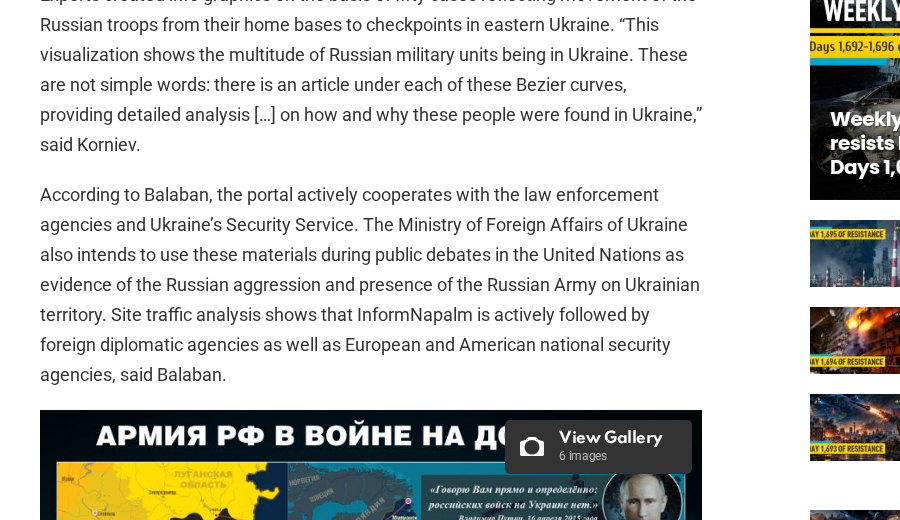
By 2017, Balaban was president of Prometheus. InformNapalm’s own write-up of the “Donbas in Flames” launch named “Mykola Balaban, the President of the Prometheus center” That is the same Prometheus that NED paid $100,000 in 2016 for investigations posted on informnapalm.org. The guide itself was funded by Canada’s local-initiatives fund, the same article says.
Then he moved inside the government. His official biography for the 2025 Kyiv StratCom Forum reads: “He was the co-founder and the president of NGO Prometheus Centre for Studies of Security Environment; later, he headed the situation centre of the Communications and Public Diplomacy Department of the MFA of Ukraine as an adviser.”
The same page lists his current title: “Deputy Head of the Centre for Strategic Communication SPRAVDI”
The Centre for Strategic Communication and Information Security, which publishes as SPRAVDI, is part of Ukraine’s state. It runs on a government domain, spravdi.gov.ua. Its mail record points to mail.mkip.gov.ua, the mail server of Ukraine’s Ministry of Culture and Information Policy. The Centre’s own About page says: “The Centre was established as one of the mechanisms for countering disinformation by joint efforts of the state and civil society.”

OctoProbe’s graph shows the same arc in data. The Balaban subject node links to a work email on the spravdi.gov.ua government domain and to the Centre’s website. OctoProbe is not publishing that address.
In short, one person went from InformNapalm’s editorial team, to president of a NED-funded nonprofit, to an adviser in Ukraine’s foreign ministry, to deputy head of a state communications centre. Each step is documented by the organizations themselves. There is nothing illegal about any of it. But it undercuts the picture of fully independent volunteers.
The embassy link runs through that Centre, too. A LinkedIn post by the Centre says it presented its work on countering disinformation during a meeting of the heads of Ukraine’s foreign diplomatic missions in 2026. OctoProbe could not view the full post without signing in, so we treat the detail as reported.
Proven: Prometheus Shares InformNapalm’s Name Servers
The graph turned up a technical tie that OctoProbe had not seen reported anywhere.
Name servers are the machines that answer for a domain on the internet. Cloudflare assigns each customer account a pair of them, with names like “boyd” and “serena.” The name servers for prometheus.ngo are boyd.ns.cloudflare.com and serena.ns.cloudflare.com. So are the name servers for informnapalm.org. So are the name servers for wildwolf.name, the personal domain that runs mail for both InformNapalm and Myrotvorets.

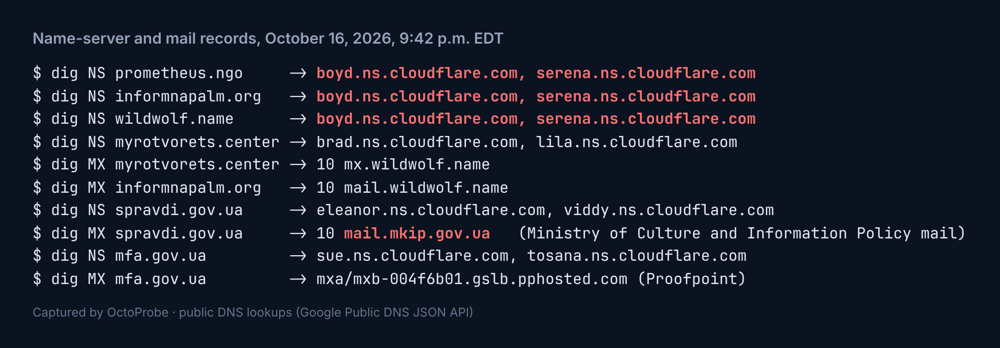
Cloudflare has many customers on any given pair, so this is not proof by itself. Combined with the shared mail server, it points to the same technical hands managing the NED grantee’s website, InformNapalm, and the server behind Myrotvorets’ mail. OctoProbe rates the shared pair as proven and the shared management as likely.
Government domains sit apart. Ukraine’s foreign ministry uses its own mail service, run by the security company Proofpoint, and different name servers. SPRAVDI uses a third pair and the culture ministry’s mail. OctoProbe found no shared infrastructure between any .gov.ua domain and the NGO network.
Proven: Myrotvorets Met InformNapalm With SBU and Interior Ministry Staff
Myrotvorets has said it is no part of the state. Its own archive says state officers sat at its table from the start.
On December 21, 2014, psb4ukr.org posted a short notice titled, in Russian, “A working meeting of Myrotvorets Center specialists with representatives of the information resources INFORMNAPALM and LOSTIVAN was held.” The archived post says: “На встрече, которая проходила 21 декабря 2014 года, присутствовали также сотрудники оперативных подразделений Центральных Аппратов СБ Украины и МВД Украины.”
In English: present at the meeting were also officers of the operational units of the central offices of the SBU and Ukraine’s Ministry of Internal Affairs. The translation is OctoProbe’s. The notice adds that participants discussed “пути взаимного обмена критической информацией”, or “ways of mutual exchange of critical information,” and cooperation with law enforcement and special services of European countries.

At the time, Arsen Avakov ran the Interior Ministry. His adviser was Anton Gerashchenko, whom press reports name as a Myrotvorets co-founder. Lawfare wrote in 2023 that Myrotvorets “was co-founded in 2014 by Anton Gerashchenko, then a member of the Ukrainian Parliament and now adviser to the Ministry of the Interior.” OctoProbe’s graph includes Avakov’s public social accounts but found no technical link between them and the NGO domains. His tie is through his ministry and his adviser, not through infrastructure.
Lawfare also located the 2015 interview the dossier cited. It quotes Zaitsev telling the Ukrainian outlet Fakty: “I repeat, we are not abstract: we work with the state, and the state cooperates with us.”

Lawfare described a wider ring around both groups. A hacker team called Kyber Sprotyv says it works with InformNapalm and Myrotvorets. Lawfare wrote that “The group’s active cooperation with Myrotvorets, InformNapalm, and the National Resistance Center is beyond any doubt.” The National Resistance Center is a unit of Ukraine’s armed forces.
What Ukraine’s Embassies Say
Ukraine’s diplomats publicly disown Myrotvorets. In July 2023, Bulgaria complained that its citizens, including the deputy speaker of parliament, were listed. Ukrainska Pravda reported that Ukraine’s ambassador “assured the Bulgarian Foreign Minister that ‘the activity of the Myrotvorets public organisation is in no way connected with the work of Ukraine’s state institutions and does not reflect the official policy of the Ukrainian state’.”
The same report adds: “The Embassy of Ukraine in Bulgaria stated separately that Myrotvorets’ activities are in no way connected with Ukraine’s state institutions operations”

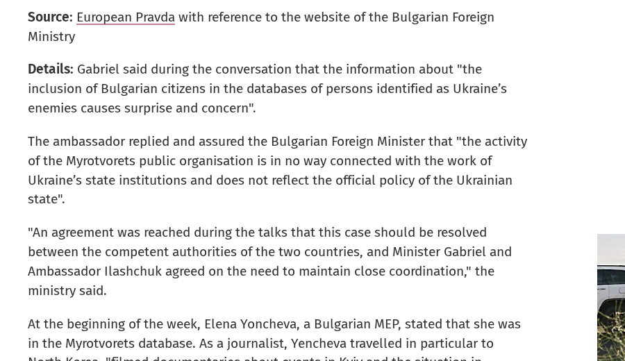
Set that statement beside Myrotvorets’ own 2014 notice. The embassy says there is no connection with state institutions. Myrotvorets says officers of two state institutions attended its working meeting and discussed sharing critical information. Both cannot be fully right. The embassy may be describing policy; the notice describes practice.
The Overlap at a Glance
| Tie | Government side | NGO side | Status | Basis |
|---|---|---|---|---|
| Mykola Balaban career | Adviser, MFA communications and public diplomacy department; deputy head, state Centre for Strategic Communication | InformNapalm editorial team (2015); Prometheus co-founder and president | Proven | Kyiv StratCom Forum bio; UCMC 2015; InformNapalm 2017; graph |
| Work email on government domain | spravdi.gov.ua (mail via Ministry of Culture and Information Policy) | Balaban subject in graph | Proven (graph); address withheld | Graph; MX record |
| 2014 working meeting | SBU and Interior Ministry operational officers | Myrotvorets, InformNapalm, LostIvan | Proven (Myrotvorets’ own notice) | psb4ukr.org, Dec. 21, 2014 |
| InformNapalm works with SBU and MFA | SBU; MFA at the UN | InformNapalm | Reported (Balaban, 2015) | UCMC |
| Myrotvorets co-founder in government role | Adviser to the Interior Ministry | Anton Gerashchenko | Reported | Lawfare; DFRLab |
| Zaitsev: “we work with the state” | Unnamed state bodies | Myrotvorets | Reported (2015 interview) | Lawfare |
| Shared Cloudflare name servers | None | prometheus.ngo, informnapalm.org, wildwolf.name | Proven | Graph; DNS |
| Centre briefed heads of Ukraine’s diplomatic missions | Embassy chiefs; state Centre | Balaban’s current employer | Reported | LinkedIn post |
| Embassy disowns Myrotvorets | Embassy of Ukraine in Bulgaria | Myrotvorets | Proven (statement) | Ukrainska Pravda |
| Shared servers between .gov.ua and the NGO network | mfa.gov.ua, spravdi.gov.ua | NGO domains | Unproven (none found) | MFA MX; SPRAVDI MX |
| Ukrainian embassy domain in the graph | Any embassy | Any NGO | Not found | Graph |
The graph also holds subjects OctoProbe could not tie to the state. One is a nonprofit finance manager with no public link to the network; OctoProbe does not name him. Another is a person whose only public profile of this kind rests on sources OctoProbe excluded for this report. A third is the registrant named in the dossier’s historical WHOIS record; the graph attaches an informnapalm.org address to her, which matches the dossier but remains unverified against a primary record. OctoProbe redacted that person’s phone numbers and personal email.
The bottom line on officials: the NGO network did not just sit near Kyiv’s government. Its people met state security officers, spoke of cooperating with them, and in at least one prominent case went to work for the state. Ukraine’s embassies say Myrotvorets is a private project. The record shows that the line between private and state has been thin from day one.
Americans on Myrotvorets: U.S. Citizens in a Foreign Database
Myrotvorets was built to catalog Russians and Ukrainians accused of aiding the invasion. It did not stay there. Archived entries show U.S. citizens, including a sitting member of Congress at the time she was listed.
OctoProbe reviewed Wayback Machine copies of the entries. We masked dates of birth and blurred photos before publishing. We cropped out other personal details.
Tulsi Gabbard
Tulsi Gabbard, a former Democratic congresswoman from Hawaii, became Director of National Intelligence in 2025. Meduza reported that she had been “included in the Myrotvorets database since at least 2022”
The archived entry from August 30, 2022 accuses her in Russian: “Вероятно является агентом российских спецслужб.” That reads, “Probably is an agent of the Russian special services.” The translation is OctoProbe’s. The site offers no evidence for it beyond press clips.
Among its sources, the entry cites a post from Ukraine’s own Center for Countering Disinformation (CCD), a body under the country’s National Security and Defense Council. That is a government list feeding a private one.

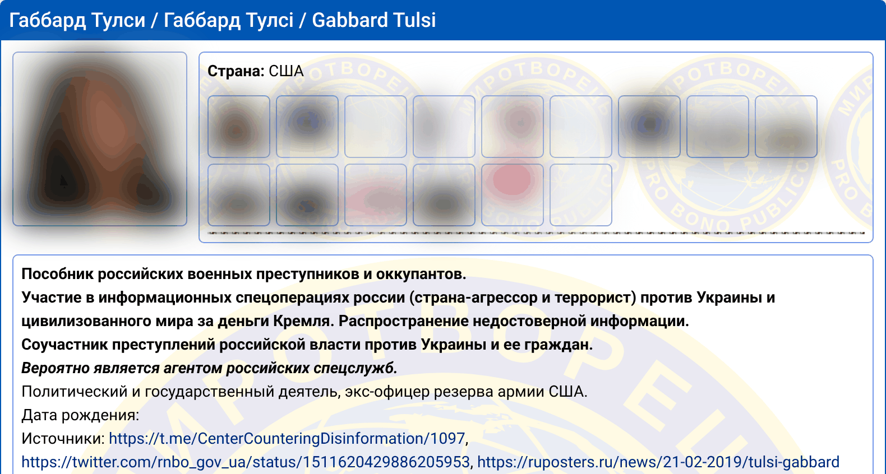

Meduza also corrected a viral rumor. It found no evidence Donald Trump was ever listed. And it noted a practical stake for anyone named. It wrote that the database is “widely used to screen individuals at government checkpoints”
Gonzalo Lira: Listed, Jailed, Dead
Gonzalo Lira was a U.S. citizen born in California and raised partly in Chile. He lived in Kharkiv and made YouTube videos echoing Kremlin talking points.
The archived Myrotvorets entry was posted on June 10, 2022, at 20:04, by a user named “XUNTA.” It labels him “Антиукраинский пропагандист.”, or “anti-Ukrainian propagandist.” It lists his countries as the United States and Chile.

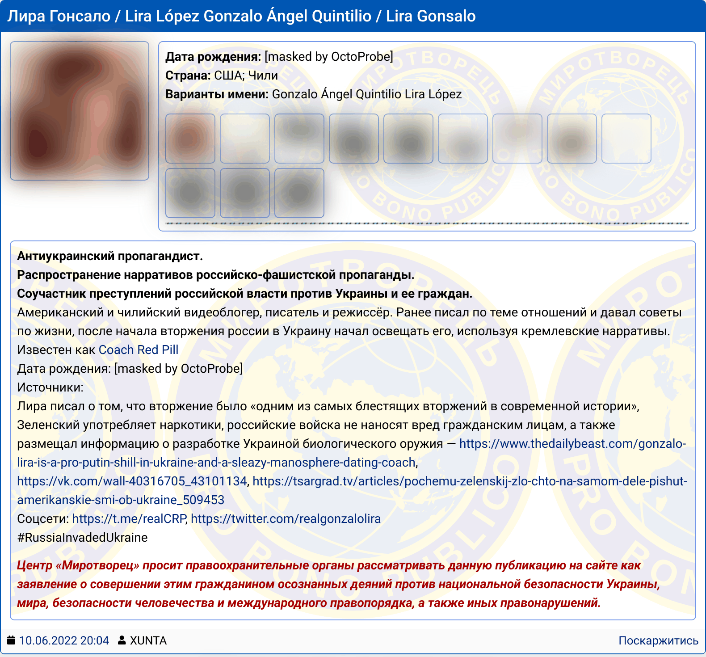
The SBU arrested Lira in May 2023 on charges of justifying Russian aggression. Newsweek reported his death in January 2024 and quoted the State Department confirming “the death of a U.S. citizen in Ukraine” The Daily Beast also reported the death.
No public evidence shows the Myrotvorets entry caused his arrest. Ukraine’s security service needed no website to find a man posting under his own name. The case still shows what is at stake. An American was listed as an enemy by a site that critics say feeds security screening. Within a year he was in a Ukrainian jail, and he died in custody.
Scott Ritter
Scott Ritter is a former Marine officer and United Nations weapons inspector in Iraq. He has been a sharp critic of U.S. policy on Ukraine.
The archived entry was posted on April 6, 2022, at 13:17. The posting account is named “NSA.” The entry includes one inflammatory accusation that OctoProbe cropped from the image below because it is unsupported.

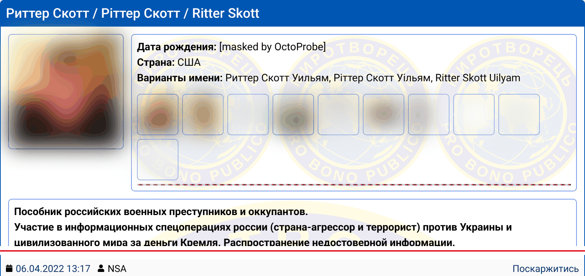
CovertAction grouped Ritter, Gabbard, and Senator Rand Paul as Americans on Ukrainian lists. Newsweek clarified that Paul was named on the CCD government list, not on Myrotvorets. OctoProbe found no Myrotvorets entry for Paul.
Henry Kissinger
The Ukrainian media watchdog Detector Media reported on May 27, 2022, that former Secretary of State Henry Kissinger had been added to Myrotvorets. Days earlier, he had suggested at Davos that Ukraine consider territorial concessions.
Per Detector Media, the entry called him “Співучасник злочинів російської влади проти України та її громадян”, or “an accomplice in the crimes of the Russian authorities against Ukraine and its citizens.” Russia’s Kommersant carried the story, and the EU’s East StratCom team later flagged Russian coverage that called the database a “death list.”

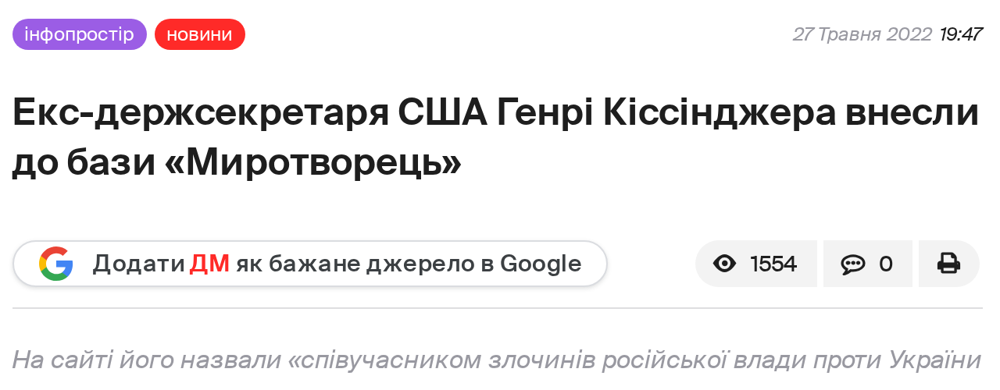
Roger Waters Is Not American
Pink Floyd co-founder Roger Waters is often lumped in with the Americans. He is British. Newsweek reported he was added on August 27, 2018. It also offered the founders’ framing. Citing his response to an Al Jazeera report, the magazine quoted Gerashchenko: “We are not a punitive body, we are an inquiry office.”

A Government List Next to a Private One
Ukraine’s Center for Countering Disinformation is a state body. In 2022 it published its own roster of people it accused of spreading Russian narratives. That roster included Americans, among them Senator Rand Paul, according to Newsweek.
The CCD list and Myrotvorets are separate. One is official, the other private. But the Gabbard entry on Myrotvorets cites a CCD post as a source. In practice, a government accusation became a footnote in a private dossier that also carries a person’s photo and birth date.
That handoff is the heart of the domestic-targeting worry. A foreign government names a U.S. citizen. A private site with reported ties to that government’s security service files the name, the face, and the accusation in a searchable database. Neither step requires any U.S. court, agency, or appeal. The listed American has no clear way to challenge either.
Myrotvorets entries carry no expiration date. The Gabbard page was live in 2022. Meduza found it still discussed in 2024, after President Trump picked her to lead the U.S. intelligence community. A foreign database had labeled the incoming Director of National Intelligence a probable Russian agent.
The Domestic-Targeting Problem
Here is why Americans should care, whatever they think of the people listed.
First, the data. The entries OctoProbe reviewed show full names, photos, and dates of birth, and DFRLab reported that the site published journalists’ personal data in bulk. When the subject is an American, a foreign website is publishing a U.S. person’s identity data and labeling them an enemy agent. U.S. privacy law does not reach a server abroad.
Second, the plumbing. Part of the network’s infrastructure sits in North America. The shared mail server and the pond analytics server both sit in OVH’s Canadian address space, per ARIN. The front end runs through Cloudflare, a U.S. company. The code is hosted on GitHub, a U.S. platform owned by Microsoft.
Third, the money. U.S. public dollars have reached the InformNapalm side of this network through NED. OctoProbe found none reaching Myrotvorets. But NED’s own rules bar it from funding programs inside the United States. A list of Americans hosted next door to a NED-funded project raises a fair question for Congress, which funds NED: what did grant oversight know about the people and servers around its grantee?
Fourth, the official channel. A government body, Ukraine’s CCD, has named Americans on its own list, and Myrotvorets cites it. The State Department, in its human rights report, describes the site as reportedly close to the security services. Taken together, those facts mean a U.S. citizen’s speech can land them in a database that, by the State Department’s own account, may be connected to a foreign intelligence service.
None of that proves a plot. It describes a risk that, in the public record OctoProbe found, Washington has noted only in passing.
Inside the “Psyops” Code: What Myrotvorets’ Source Reveals
A website’s source code is public by design. Your browser downloads it to draw the page. OctoProbe read Myrotvorets’ code the way any visitor’s browser receives it. We did not log in, probe for weak spots, or bypass security checks. Because myrotvorets.center shows a Cloudflare challenge to automated tools, we worked from Wayback Machine copies. Every code block below is verbatim, with its source and fetch date.
The Psyops Plugin
Myrotvorets runs on WordPress, the popular publishing software. WordPress add-ons are called plugins. Near the bottom of every page, the archived homepage loads two scripts with these identifiers: myr-psyops-js-before and myr-psyops-js.

<script id="myr-psyops-js-before">
const psyOpsSettings = {"ajaxUrl":"https:\/\/myrotvorets.center\/wp-admin\/admin-ajax.php"};
//# sourceURL=myr-psyops-js-before
</script>
<script id="myr-psyops-js" src="https://myrotvorets.center/wp-content/plugins/psb-plugins/psyops/assets/psyops.js?ver=1656685735"></script>
<div id="psyops-container"></div>Source: myrotvorets.center/, fetched October 16, 2026.
The file path tells the story: psb-plugins/psyops/assets/psyops.js. The “psb” prefix matches the site’s first domain, psb4ukr.org. This is an in-house plugin. Its folder name is “psyops.”
The page also carries an empty holder for whatever that script produces. It sits near the top of the page body:
<div id="psyops-container"></div>Source: myrotvorets.center/, fetched October 16, 2026.
What psyops.js Does
Here is the full script, as archived on October 8, 2026:

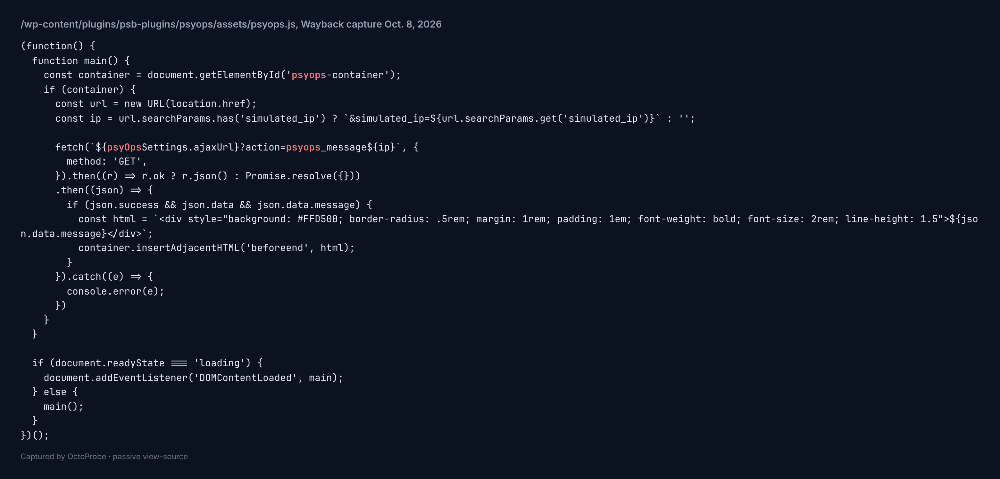
psyops.js file. Captured by OctoProbe from the Wayback Machine copy of October 8, 2026.(function() {
function main() {
const container = document.getElementById('psyops-container');
if (container) {
const url = new URL(location.href);
const ip = url.searchParams.has('simulated_ip') ? `&simulated_ip=${url.searchParams.get('simulated_ip')}` : '';
fetch(`${psyOpsSettings.ajaxUrl}?action=psyops_message${ip}`, {
method: 'GET',
}).then((r) => r.ok ? r.json() : Promise.resolve({}))
.then((json) => {
if (json.success && json.data && json.data.message) {
const html = `<div style="background: #FFD500; border-radius: .5rem; margin: 1rem; padding: 1em; font-weight: bold; font-size: 2rem; line-height: 1.5">${json.data.message}</div>`;
container.insertAdjacentHTML('beforeend', html);
}
}).catch((e) => {
console.error(e);
})
}
}
if (document.readyState === 'loading') {
document.addEventListener('DOMContentLoaded', main);
} else {
main();
}
})();Source: myrotvorets.center/wp-content/plugins/psb-plugins/psyops/assets/psyops.js?ver=1656685735, fetched October 16, 2026.
In plain English, the script does four things.
- It looks for the empty
psyops-containerbox on the page. - It asks the Myrotvorets server for a “psyops_message.”
- If the page address includes a
simulated_ipsetting, it passes that along. This lets an operator pretend to be a visitor from somewhere else. - If the server returns a message, the script displays it in large bold type on a bright yellow background, the yellow of Ukraine’s flag.
The script itself sends no visitor data beyond the ordinary request. The key logic lives on the server, which OctoProbe cannot see. But the simulated_ip test switch reveals the design. The message depends on the visitor’s internet address. An IP address roughly reveals a visitor’s country and network. Myrotvorets keeps a public IP geolocation service on GitHub, described above.
OctoProbe’s inference: the plugin shows a different message to readers from different places. A reader in Russia might see one banner. A reader in Kyiv might see nothing. That is targeted messaging, and the developers chose to call it “psyops.”
The dossier’s earlier screenshot shows the same code, captured at an earlier date.

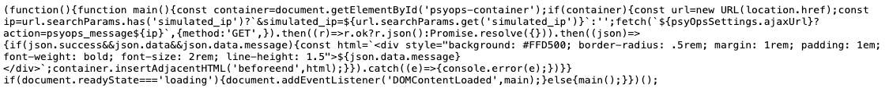
psyops.js logic in an earlier capture. Source: dossier provided to OctoProbe.How Long It Has Run
The Wayback Machine’s capture index shows psyops.js first archived on July 1, 2022, about four months after Russia’s full-scale invasion. The version string, ver=1656685735, is a Unix timestamp, a count of seconds since 1970. It converts to July 1, 2022, at 10:28 a.m. EDT.
The July 2022 capture is compressed, or “minified,” onto two lines. Its logic matches the 2026 version line for line. The plugin has run unchanged for over four years.
Why the “Psyops” Label Matters
Developers name things for what they do. A plugin called “banner” shows banners. A plugin called “psyops” tells you how its authors think about their audience.
In military doctrine, psychological operations aim at foreign audiences. The U.S. Army now calls them Military Information Support Operations. U.S. law and policy restrict aiming them at Americans. Myrotvorets is not bound by those rules. It is a private Ukrainian site.
But Myrotvorets is not only read by Russians. Americans read it, too, including reporters, researchers, and people looking up their own names. The plugin’s IP-based logic means an American visitor may see a message chosen for Americans, or none at all. Without access to the server, no outsider can say what that message is.
That opacity is the problem. A site that catalogs U.S. citizens as enemy agents also runs a feature its builders call psychological operations, and it decides by location what each reader sees. Whatever the intent, readers deserve to know it is there.
The timing also matters. The plugin first appears in July 2022, months into the full-scale war, when Ukraine’s information effort was at its peak and Western audiences were paying close attention. The “Langley” address, the “foreign special services” menu, and the “NATO” content domain all add to a picture of a site that wants Western readers to believe powerful friends stand behind it.
OctoProbe’s view is that the branding works in two directions. To Russian readers, it signals danger: the West is watching you. To Western readers, it signals legitimacy: this is an ally’s tool. Neither signal is backed by any public record of U.S. or NATO control. Both are cheap to send.
Tracking: Matomo Across Three Domains
Every site counts its visitors. Myrotvorets uses Matomo, an open-source analytics tool that site owners can run on their own servers. Myrotvorets runs its own copy at pond.myrotvorets.center.

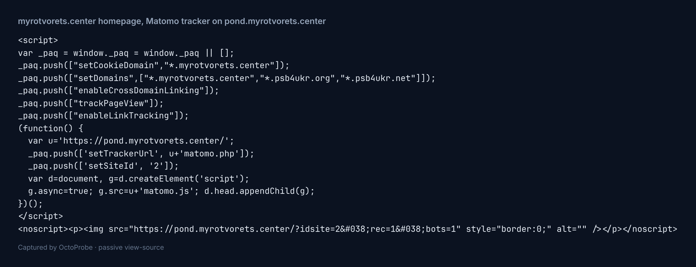
<script>
var _paq = window._paq = window._paq || [];
_paq.push(["setCookieDomain","*.myrotvorets.center"]);
_paq.push(["setDomains",["*.myrotvorets.center","*.psb4ukr.org","*.psb4ukr.net"]]);
_paq.push(["enableCrossDomainLinking"]);
_paq.push(["trackPageView"]);
_paq.push(["enableLinkTracking"]);
(function() {
var u='https://pond.myrotvorets.center/';
_paq.push(['setTrackerUrl', u+'matomo.php']);
_paq.push(['setSiteId', '2']);
var d=document, g=d.createElement('script');
g.async=true; g.src=u+'matomo.js'; d.head.appendChild(g);
})();
</script>
<noscript><p><img src="https://pond.myrotvorets.center/?idsite=2&rec=1&bots=1" style="border:0;" alt="" /></p></noscript>Source: myrotvorets.center/, fetched October 16, 2026.
Two settings stand out. setDomains tells Matomo to treat myrotvorets.center, psb4ukr.org, and psb4ukr.net as one site. enableCrossDomainLinking makes the tracker carry a visitor’s ID across those domains. Matomo’s own documentation explains that the feature lets a site follow one visitor across domains it owns.
The site ID is “2.” That suggests at least one other site reports to the same tracker. OctoProbe could not determine which.
That the analytics are self-hosted matters. Data stays on Myrotvorets’ own server, in OVH’s Canadian space, not with Google or another outside company. Who reads that data is unknown.
The wildwolf.name Beacon
The last script on the page is the most unusual. It is one line long.

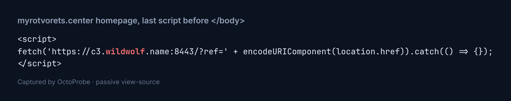
<script>
fetch('https://c3.wildwolf.name:8443/?ref=' + encodeURIComponent(location.href)).catch(() => {});
</script>Source: myrotvorets.center/, fetched October 16, 2026.
A beacon is a small request that reports a page view to another server. This one sends the full address of the page you are reading to c3.wildwolf.name, on an uncommon port, 8443. It silently swallows any error, so a reader never sees it fail.
Because the request goes to a different domain, the reader’s browser also sends its internet address and browser details to that server. OctoProbe’s lookup on October 16, 2026, placed c3.wildwolf.name at 45.129.97.72, in a block registered with RIPE, the European internet registry.
OctoProbe cannot say what the c3 server does with the data. It could be uptime monitoring or a cache warmer. It could be a second, private log. What we can say is that every Myrotvorets reader’s visit is reported to a server on the personal domain that also handles InformNapalm’s mail.
Fingerprinting and Telemetry: What Myrotvorets’ Own GitHub Code Shows
Claims that Myrotvorets “fingerprints” its readers trace back to its public GitHub organization. OctoProbe read it. The organization’s repository list holds seventy-one public repositories. Many carry the prefix “psb,” which matches the site’s first domain, psb4ukr.org. The code uses it as a namespace, as in psb::opentelemetry. OctoProbe found no file that spells out what the letters stand for.
The repositories show an engineered platform, not a hobby site. There are microservices, small programs that each do one job, for face recognition (IDentigraF and VIDentigraF), photo sync, an integration called Dzhura, IP geolocation, and search tracking. There are Docker images, Kubernetes deployment actions, a private C++ package registry, and WordPress plugins for the main site. Most commits come from an account named “Unsung Hero” tied to the “myrotvorets-team” GitHub user, and from automated update bots.

OpenTelemetry: Standard Server Monitoring
Four repositories carry OpenTelemetry in their names. OpenTelemetry is an open-source standard for collecting traces, metrics, and logs from software, so engineers can see how their servers behave. The project’s own site calls it “An observability framework and toolkit designed to facilitate the” generation, export, and collection of telemetry data such as traces, metrics, and logs.
The live infrastructure matches. OctoProbe’s graph found a subdomain named otel.myrotvorets.center, a common shorthand for an OpenTelemetry collector. A public DNS lookup on October 16, 2026, showed it answering behind Cloudflare. That fits routine server monitoring. It does not show what data the collector receives.

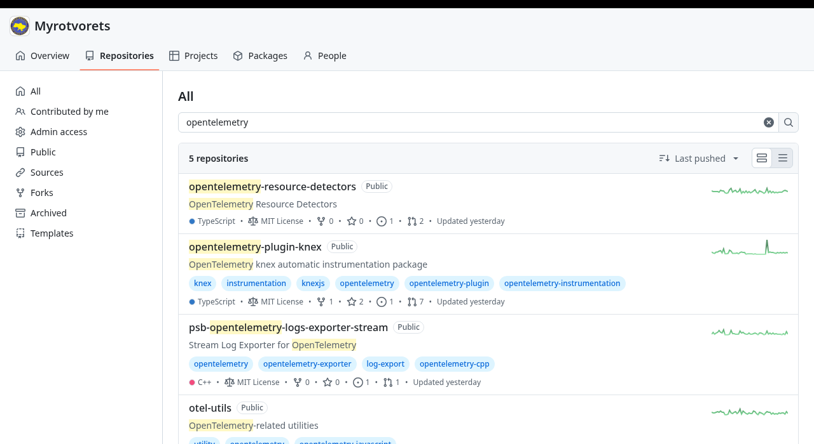
Here is what each one does, based on the code:
- opentelemetry-configurator, described as an “Internally used package to configure OpenTelemetry for our microservices”, switches on standard web-server tracing. Its custom hook only renames each trace after the request method and web address.
- otel-utils collects process metrics such as memory, CPU time, open files, and connection counts.
- opentelemetry-resource-detectors labels data with the server’s own environment: Docker, Kubernetes, operating system, and package version.
- psb-opentelemetry-logs-exporter-stream, a C++ library, exports logs to a program’s console output. Its README says why: “Because it is often faster and easier to look at the program's stderr to see what is going on.”
That is ordinary server observability. None of these four packages reads a visitor’s screen, fonts, graphics card, or other device traits. They are not fingerprinting tools.
They do sit beside a request logger that records visitors’ addresses. The shared logging middleware writes one line per request in this format:
return requestLogger({
format: `[${service}] :remote-addr :method :url :req[content-length] :status :res[content-length] :date[iso] :total-time`,
beforeLogHook: (err, req, _res, line, tokens): string => {Source: github.com/myrotvorets/express-otel-middlewares/blob/e21612cdc211ff79d27090aeecf848bacfffe, fetched October 16, 2026.
The :remote-addr token is the client’s IP address, read from the request. Logging client IPs is common on web servers. It is still visitor data, kept on Myrotvorets’ side.
The Search Tracker: Who Searched for Whom
The most revealing repository is not about OpenTelemetry. It is psb-api-search-tracker, the “Search Tracker Microservice.”
It accepts a record for each search of the database. The request body lists the search terms, a person’s name, date of birth, country, address, phone, and description, plus three fields about the searcher: ra, ff, and tc.

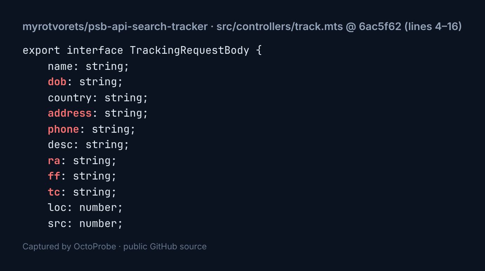
export interface TrackingRequestBody {
name: string;
dob: string;
country: string;
address: string;
phone: string;
desc: string;
ra: string;
ff: string;
tc: string;
loc: number;
src: number;Source: github.com/myrotvorets/psb-api-search-tracker/blob/6ac5f62f40f15c938a911aee7628e2df07f5839, fetched October 16, 2026.
The tracking service shows what those fields are. ra becomes remoteAddress, the searcher’s IP address. ff becomes forwardedFor, the X-Forwarded-For header, which lists the chain of addresses a request passed through, often including the visitor’s real address behind a proxy. tc becomes piwikCode. Piwik is the old name of Matomo, the analytics tool on the main site.
sourceID: number,
): Promise<void> {
if (!params.name && !params.dob && !params.country && !params.address && !params.phone && !params.description) {
return Promise.resolve();
}
return this._model.transaction(async (_trx, { search, searchQuery }) => {
const trackingCode = isPiwikCode(piwikCode) ? piwikCode : null;
const searchID = await this.getSearchID(searchQuery, params);
const ips = this.getIPs(remoteAddress, forwardedFor);
for (const ip of ips) {
// eslint-disable-next-line no-await-in-loop
await this.doTrack(search, ip, locationID || null, trackingCode, searchID, sourceID);
}
});
}
protected getIPs(requestAddress: string, forwardedFor: string): string[] {
const ff = forwardedFor.split(',').map((s) => s.trim());
return [...new Set([requestAddress, ...ff])].filter((ip) => isGoodIP(ip));
}
protected async doTrack(
searchModel: SearchModel,
ip: string,
locationID: number | null,
trackingCode: string | null,
searchID: number,
sourceID: number,
): Promise<unknown> {
return searchModel.insert({
search_id: searchID,
source_id: sourceID,
dt: Math.floor(Date.now() / 1000),
ipaddr: inet_pton(ip)!,
loc_id: locationID,
piwik: trackingCode,
});
}
}Source: github.com/myrotvorets/psb-api-search-tracker/blob/6ac5f62f40f15c938a911aee7628e2df07f5839, fetched October 16, 2026.
Read plainly, the service saves the search terms once. Then, for every public IP address it finds in the request and the forwarding header, it writes a row with the search, a timestamp, a location ID, and the Matomo code. The validator accepts that code only if it is sixteen hexadecimal characters, the format of Matomo’s per-browser visitor ID:
export function isPiwikCode(s: string): boolean {
return /^[0-9a-f]{16}$/u.test(s);
}Source: github.com/myrotvorets/psb-api-search-tracker/blob/6ac5f62f40f15c938a911aee7628e2df07f5839, fetched October 16, 2026.
The result is a log of who looked up whom. Each search of the “enemies” database can be tied to the searcher’s IP addresses and to the same visitor ID that Matomo uses to follow that browser across myrotvorets.center, psb4ukr.org, and psb4ukr.net. The test database schema in the repository is dated December 1, 2019, which suggests the table design predates the public repository, first committed in February 2024.
This is not browser fingerprinting. It is server-side visitor identification, linked to analytics. For a site that publishes accusations against named people, it means the operators can see who is checking on those people, and from where.
IP Geolocation and Face-Recognition Logins
The IP geolocation microservice looks up an address in two databases and returns the country, city, internet provider, and network owner. It is the kind of service the “psyops” plugin would need to pick a message by location, though OctoProbe found no code that wires the two together.

public geolocate(ip: string): GeoResponse {
const [city, cprefix] = this.geolocateCity(ip);
const [isp, iprefix] = this.geolocateISP(ip);
return {
cprefix,
iprefix,
...this.adaptCityResponse(city),
...this.adaptIspResponse(isp),
};
}Source: github.com/myrotvorets/psb-api-ipgeo/blob/71719bc1866266e90073523e6c53d11a1252ceb5/src/ser, fetched October 16, 2026.
The IDentigraF face-recognition front end goes one step further with analytics. Its tracker code hands the logged-in user’s login name to Matomo with setUserId, so each page view is recorded against a named account.

self._paq.push(['setDocumentTitle', document.title]);
self._paq.push(['trackPageView']);
self._paq.push(['enableLinkTracking']);
}
export function setUserID(login: string): void {
self._paq.push(['setUserId', login]);
}
export function resetUserID(): void {
self._paq.push(['resetUserId']);
}Source: github.com/myrotvorets/n.identigraf.center/blob/b3e906679573294247df4e73ddbc3904ca46bcce/s, fetched October 16, 2026.
The organization also kept an archived scraper described as a “Cron job to scrape the list of persons wanted by the Security Service of Ukraine”, a direct software link between the site and the SBU’s public wanted list.
What the Code Does Not Show
OctoProbe found no FingerprintJS, no canvas or WebGL probing, no audio fingerprinting, and no user-agent parsing library in the repositories reviewed. The request logger can record the user-agent header, but the shared format above does not include it. The claim of “excessive fingerprinting” remains unproven. The narrower claim, that Myrotvorets logs and links visitor identities, is proven by its own code.
Who Builds It: A Match to wildwolf.name
Public commit metadata names no individual. Commits come from “Unsung Hero” and “Myrotvorets” accounts, and neither lists sjinks, Volodymyr Kolesnykov, or wildwolf.name. OctoProbe did not publish the accounts’ email addresses.
The dependencies tell a different story. Four Myrotvorets WordPress plugins require PHP packages published under the “wildwolf” name, for example in this composer.json. The package registry Packagist lists the wildwolf/singleton-trait author as Volodymyr Kolesnykov, with source code at github.com/sjinks. The organization’s private C++ registry includes a package called wwa-coro that pulls code from the sjinks/coro-cpp repository. And automated update commits across the organization refresh development containers hosted at ghcr.io/sjinks/codespaces.
Using someone’s open-source code does not make that person the author. But a production stack that runs on one developer’s personal packages and personal build images, combined with mail and beacon servers on that developer’s domain, is a strong technical match. OctoProbe rates the developer link as likely, not proven.
“For Foreign Special Services”: The Login Page
The main menu links to a page in English labeled for foreign intelligence agencies.
<li id="menu-item-1461186" class="menu-item menu-item-type-custom menu-item-object-custom menu-item-1461186"><a href="https://auth.myrotvorets.center/en/">For foreign special services</a></li>Source: myrotvorets.center/, fetched October 16, 2026.
The archived login page asks for four things: a login, a password, a six-digit authentication code, and a “key file” upload. Two-factor authentication plus a key file is stronger security than most banks demand.

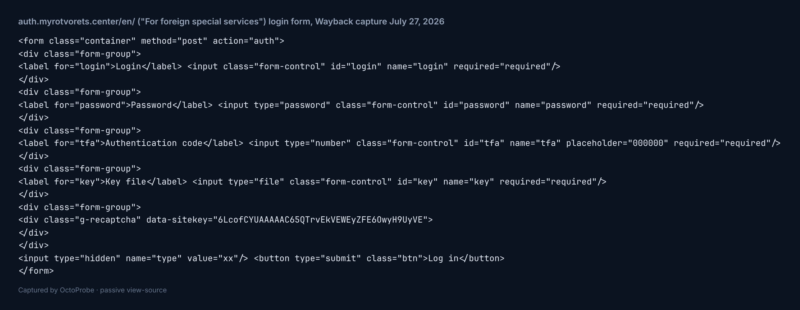
<form class="container" method="post" action="auth">
<div class="form-group">
<label for="login">Login</label> <input class="form-control" id="login" name="login" required="required"/>
</div>
<div class="form-group">
<label for="password">Password</label> <input type="password" class="form-control" id="password" name="password" required="required"/>
</div>
<div class="form-group">
<label for="tfa">Authentication code</label> <input type="number" class="form-control" id="tfa" name="tfa" placeholder="000000" required="required"/>
</div>
<div class="form-group">
<label for="key">Key file</label> <input type="file" class="form-control" id="key" name="key" required="required"/>
</div>
<div class="form-group">
<div class="g-recaptcha" data-sitekey="6LcofCYUAAAAAC65QTrvEkVEWEyZFE6OwyH9UyVE">
</div>
</div>
<input type="hidden" name="type" value="xx"/> <button type="submit" class="btn">Log in</button>
</form>Source: auth.myrotvorets.center/en/, fetched October 16, 2026.
The page does not say which agencies hold accounts. The site’s header says its information is meant for law enforcement and special services. The login proves only that the site built a gated portal and labeled it for foreign spy services. OctoProbe did not attempt to log in.
Robots.txt: Blocking Russian Search and AI Crawlers
A robots.txt file tells search engines and other automated crawlers which pages to skip. The dossier’s capture of Myrotvorets’ file blocks Mail.ru, a Russian web company, and GPTBot, OpenAI’s crawler for training artificial intelligence (AI) models.

Myrotvorets wants its data visible to Google and Western security services, not to Russian indexers or AI training sets. That is consistent with its stated mission.
Where It Started: psb4ukr.org in 2014
The earliest Wayback copy of the original domain, from November 1, 2014, shows a simpler site with the same mission and the same nonprofit-center branding.

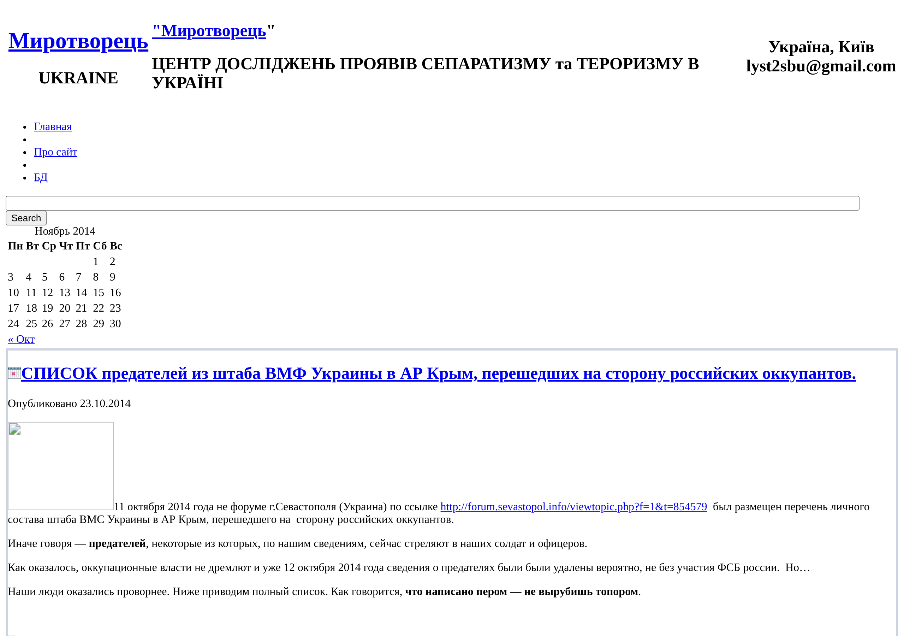
What Myrotvorets, InformNapalm, NED, and Officials Say
Fairness requires the other side in its own words.
Myrotvorets says it is independent. Its donation page says it is funded by no state or nonstate body and belongs to no government structure. Newsweek quoted Gerashchenko’s response to an Al Jazeera report: “We are not a punitive body, we are an inquiry office.” Meduza reported that Zaitsev “has maintained that the website is not controlled by the agency and does not receive state funding.”
InformNapalm says it is a volunteer project funded by no government. It has publicly thanked its webmaster and described defending its site from attacks.
NED says it is a private nonprofit, not part of the government, and does not fund programs in the United States. Its 2016 grant to Prometheus is public on its own site.
Ukraine’s government has kept its distance. Newsweek reported that the site “has no known or official links to the Ukrainian government” It added that “official Kyiv keeps its own separate list” of people it considers threats.
Russia’s government has long called the database a hit list. Russia’s state news agency TASS reported Moscow’s complaints to international bodies. The EU’s East StratCom team has flagged some Russian claims as disinformation.
The murders cited as proof. Critics point to the 2015 killings of journalist Oles Buzina and former lawmaker Oleg Kalashnikov, both listed on Myrotvorets. Newsweek, citing Al Jazeera, wrote that “no direct link has been found or proven in court” between the listings and the killings.
The legal record in Ukraine. DFRLab reported that Ukraine’s National Police opened a criminal case over the journalist leak in 2016 under the article covering obstruction of journalists’ work.
Timeline: Myrotvorets, InformNapalm, and U.S. Attention, 2014–2026
- February 2014. Maidan protests topple President Yanukovych. Russia moves on Crimea.
- 2014. InformNapalm forms as a volunteer intelligence community. Myrotvorets launches at psb4ukr.org; the Wayback Machine has a copy from November 1, 2014.
- December 2014–February 2015. Ukraine creates a Ministry of Information Policy; Newsweek reports 35,000 sign-ups for its “information army.”
- December 21, 2014. Myrotvorets posts that its specialists met InformNapalm and LostIvan with SBU and Interior Ministry officers present, per its own notice.
- August 2015. Mykola Balaban, speaking for InformNapalm, says it cooperates with the SBU, per the Ukraine Crisis Media Center.
- November 7, 2015. The dossier says myrotvorets.center was first registered on this date. Not independently verified.
- May 2016. Myrotvorets publishes personal data of thousands of journalists accredited by Russian-backed authorities in the Donbas. DFRLab records Poroshenko’s condemnation and a police case.
- 2016. NED grants Prometheus $100,000 for investigations posted on informnapalm.org, per its 2016 Ukraine list.
- October 28, 2016. Ukrainska Pravda publishes its wiretapping investigation. A State Department email in Kyiv summarizes it the same day.
- April 27, 2018. A State Department email relays the SBU “Bedbugs” file accusing U.S. intelligence of steering activists. The SBU later called it a fake.
- August 2018. Myrotvorets adds Roger Waters, per Newsweek. InformNapalm names its webmaster in a fundraising post.
- January 26, 2019. First logged certificates for natocdn.net, per crt.sh.
- May 23, 2020. The Myrotvorets GitHub organization is created, per the GitHub API.
- February 24, 2022. Russia launches its full-scale invasion.
- April–June 2022. Entries for Scott Ritter (April 6), Henry Kissinger (May 27, per Detector Media), and Gonzalo Lira (June 10) appear.
- July 1, 2022. The psyops.js plugin is first archived, per the Wayback capture index.
- By August 2022. Tulsi Gabbard’s entry is live, per the archived page.
- May 2023. The SBU arrests Lira. He dies in custody in January 2024, per Newsweek.
- July 2023. Ukraine’s embassy in Bulgaria says Myrotvorets has no connection with state institutions, per Ukrainska Pravda.
- 2024. The State Department’s 2023 human rights report says Myrotvorets reportedly maintained close ties to the security services.
- November 2024. Meduza examines Gabbard’s listing after her nomination as intelligence chief.
- 2025. Balaban appears at the Kyiv StratCom Forum as deputy head of the state Centre for Strategic Communication, per his forum biography.
- September–October 2026. Archived Myrotvorets pages still list “Langley, VA, USA,” load the psyops plugin, and beacon to c3.wildwolf.name. OctoProbe’s DNS checks on October 16 confirm the shared mail server.
Proven, Reported, Unproven: The OctoProbe Scorecard
This table sorts every major claim about the Myrotvorets network by the strength of the public evidence. “Proven” means OctoProbe verified it from a primary record. “Reported” means a named outlet or document says it and OctoProbe could not confirm it independently. “Unproven” means OctoProbe found no supporting record.
| Claim | Status | Basis |
|---|---|---|
| Myrotvorets met InformNapalm with SBU and Interior Ministry officers present (2014) | Proven (Myrotvorets’ own notice) | psb4ukr.org archive |
| Prometheus’ co-founder and president became an MFA adviser and deputy head of a state communications centre | Proven | Kyiv StratCom Forum bio; SPRAVDI |
| prometheus.ngo shares Cloudflare name servers with informnapalm.org and wildwolf.name | Proven | DNS; OctoProbe graph |
| Ukrainian government domains share servers with the NGO network | Unproven (none found) | mfa.gov.ua MX |
| Myrotvorets domains and informnapalm.org use the same mail server, 158.69.208.188 | Proven | MX: myrotvorets.center; MX: informnapalm.org; ARIN |
| InformNapalm’s SPF record authorizes the IPv6 address of Myrotvorets’ mail server | Proven | SPF: informnapalm.org; AAAA: mx.wildwolf.name |
| Every Myrotvorets page sends a beacon to c3.wildwolf.name | Proven | Archived homepage source |
| wildwolf.name is the website listed by GitHub user “Volodymyr Kolesnykov” | Proven | GitHub profile |
| That developer is InformNapalm’s webmaster “Volodymyr Kolesnikov” | Likely; name match only | InformNapalm 2018 post |
| NED gave $100,000 for investigations posted on informnapalm.org | Proven (grantee: Prometheus) | NED 2016 Ukraine list |
| InformNapalm says it has not applied for grants | Proven (its statement) | InformNapalm donate page |
| NED funded Myrotvorets | Unproven | No entry in NED listings |
| The CIA funded Myrotvorets or InformNapalm | Unproven | No document found; FOIA “Bedbugs” file concerns other activists and was disowned by the SBU |
| NED does openly what the CIA once did covertly | Reported (Allen Weinstein, 1991) | Washington Post |
| Myrotvorets has close ties to Ukraine’s security services | Reported (State Department, “reportedly”) | 2023 Human Rights Report |
| Myrotvorets’ director is a former SBU department head | Reported (RFE/RL via DFRLab) | DFRLab |
| myrotvorets.center was registered with an informnapalm.org email | Reported (dossier, SecurityTrails history) | Not independently verified |
| Homepage lists “Langley, VA, USA” | Proven | Archived homepage |
| Myrotvorets is a CIA project | Unproven | Claimed by CovertAction; no supporting record found |
| natocdn.net is run by NATO | Unproven | crt.sh shows commercial certificates from 2019 |
| A Myrotvorets server resolved to psb4ukr.nato.int | Unproven | No historical DNS record found, per dossier and OctoProbe |
| Leaked slides show NATO and U.S. military cooperation | Unverified | Source, date, and author unknown |
| A plugin named “psyops” shows IP-dependent messages | Proven (code); server logic inferred | psyops.js; CDX |
| Matomo follows visitors across three Myrotvorets domains | Proven | Archived homepage source; Matomo docs |
| Myrotvorets uses excessive browser fingerprinting | Unproven | No fingerprinting library, canvas, WebGL, or audio probes in pages or 24 cloned repositories |
| A Myrotvorets microservice logs database searches with searchers’ IP addresses and Matomo visitor IDs | Proven (code) | track.mts; trackingservice.mts |
| Myrotvorets’ OpenTelemetry repositories are standard server monitoring | Proven (code) | configurator; otel-utils |
| Myrotvorets’ code depends on packages and build images by the wildwolf.name developer | Proven (dependencies); authorship unproven | composer.json; Packagist; vcpkg port |
| Myrotvorets listed U.S. citizens Gabbard, Ritter, and Lira | Proven | Gabbard; Ritter; Lira |
| Myrotvorets listed Henry Kissinger | Reported (Detector Media) | detector.media |
| Myrotvorets is a “kill list” that caused deaths | Unproven | Newsweek: no link proven in court |
| Rand Paul is on Myrotvorets | Unproven; he was on Ukraine’s CCD list | Newsweek |
Claims OctoProbe Could Not Substantiate
Several popular claims did not survive the records check. OctoProbe found no document showing CIA money reaching Myrotvorets or InformNapalm. We found no NED grant to Myrotvorets. We found no browser-fingerprinting library in the pages or code we reviewed, though the code does log searchers’ IP addresses. We found no evidence that NATO hosts natocdn.net or ever ran psb4ukr.nato.int. We could not verify the leaked slides, or the historical registration records that the dossier cites. We could not retrieve a usable copy of the State Department press briefing that the dossier mentions. And we found no shared servers between any Ukrainian government or embassy domain and the NGO network; the ties to the state run through people and meetings, not machines.
The Bottom Line on Myrotvorets
Strip away the rumors and the record still says a lot.
Myrotvorets, a website that brands enemies of Ukraine, shares a mail server with InformNapalm, a volunteer intelligence group. The server runs on the personal domain of a developer whose name matches InformNapalm’s webmaster. That same domain receives a report of every page view on Myrotvorets.
InformNapalm says it takes no grants. A NED grant funded by U.S. taxpayers paid $100,000 for work posted on its website.
Myrotvorets runs code its own developers named “psyops.” Its own search tracker records who looks up whom, by IP address and analytics ID. It tracks visitors across domains and offers a key-file login for foreign spy services. It lists a Langley, Virginia, address. It has listed Americans, including a future Director of National Intelligence and a man who later died in Ukrainian custody.
The record does not show CIA funding. It does not show NATO servers. It does not show that the list has ever been used to order a killing. Those claims remain unproven, and OctoProbe says so plainly.
The line to Kyiv’s government is just as visible. Myrotvorets’ own notice puts SBU and Interior Ministry officers at its 2014 meeting with InformNapalm. The NED grantee’s president went on to advise Ukraine’s foreign ministry and help run a state communications centre. Ukraine’s embassies say Myrotvorets is unconnected to the state. The organizations’ own records say otherwise.
What the record shows is a private database of named enemies, Americans among them. It sits one server away from a project that Washington’s democracy fund paid to support. Congress funds NED. OctoProbe found no public record that Congress has ever asked about that neighborhood.
Related OctoProbe work: our identifier-graph methodology explains how we connect domains, servers, and accounts. Our investigation of Saudi intelligence digital footprints applies the same methods to a state service. Our report on an Archive.today donation link shows how archive infrastructure can be traced. And our White House vetting press-clips investigation looks at how lists of names travel.
Disclaimer
This report relies on public records, archived web pages, and documents provided by sources. Allegations described here are allegations, attributed to those who made them. OctoProbe does not accuse any named individual of a crime. OctoProbe masked personal data and observed systems passively, without logging in or bypassing security controls.